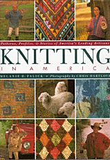

Knitting in America
Knitting in America

 Being included in this wonderful book is the greatest honor I have ever
received. I'm still pinching myself!
Being included in this wonderful book is the greatest honor I have ever
received. I'm still pinching myself!
For 15 years I worked to find my path. I opened a graphic design business
in 1980 but knew that it was not what I was supposed to do for the rest of my
life. But what WAS my path?
I read; I studied; I meditated; I talked with friends - and I cried. All to
no avail. WHAT was I supposed to be doing? I knew the answer was out there but
I was having a devil of a time finding it. Was I working too hard?
Christmas 1992 found me doing needlepoint from a small book of charted
Native American Designs. The more I worked with these designs the more I
realized that I was getting energized as I worked. The designs were so
wonderful and had such a calming energy and that energy was being transferred to
me as I worked.
I quickly ripped up an old sweater that I had made way back in 1969 and knit
up a vest of my own design using some of the designs from that little book.
This was my first custom design. The yarn was terrible but the outcome was a
revelation. I took my humble first attempt with me when I visited a good friend
in Oregon. She was so impressed that she commissioned me to make her a sweater.
My first commission!
By the time I attended the Taos Wool Festival that Fall, I had three of four
other vests designed. As an afterthought I stuck them in my suitcase. I ended
up wearing one around Taos and kept getting stopped in the street by other
festival attendees. It was wonderful to have others compliment me on my work.
The day we left I quickly dashed into La Lana Wools and after showing them my
designs, I ended up leaving all of them. Within two weeks, Melanie Falick,
author of Knitting in America visited La Lana, saw my work, called me and, as
they say, the rest is history.
I had finally found my true path and it was right in front of me the whole
time!
|